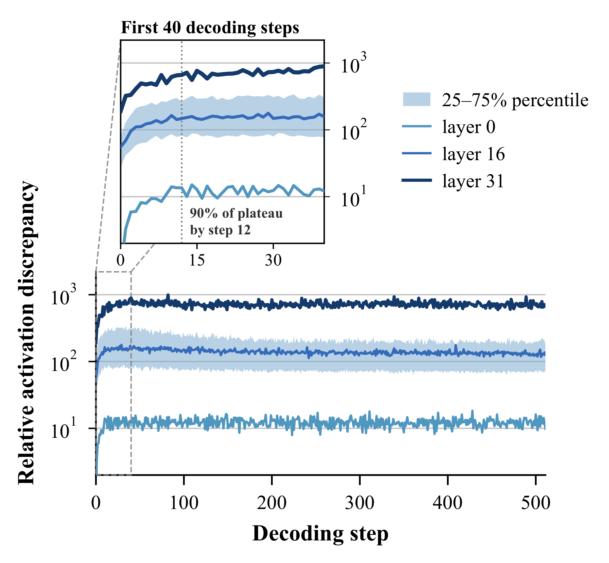
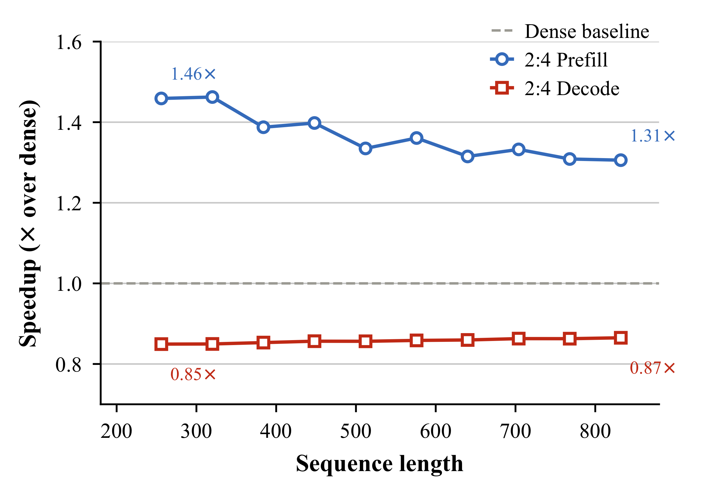
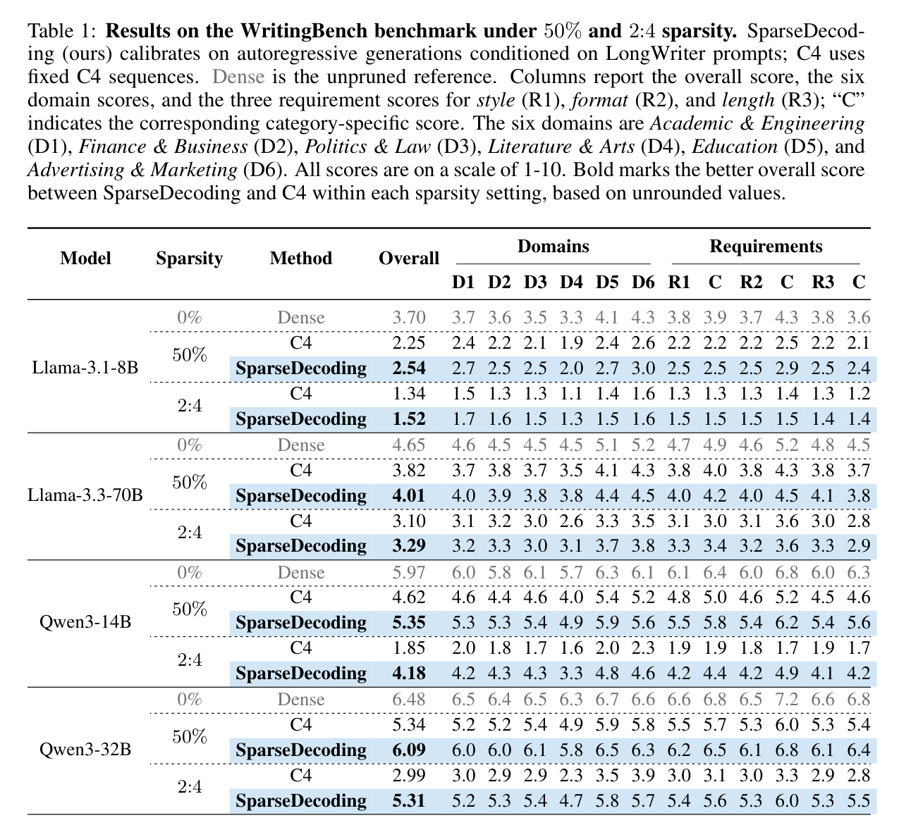
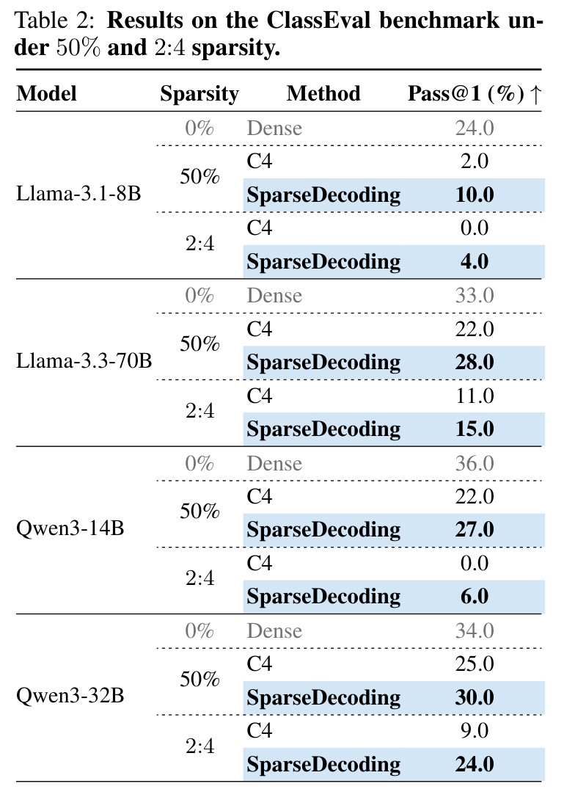
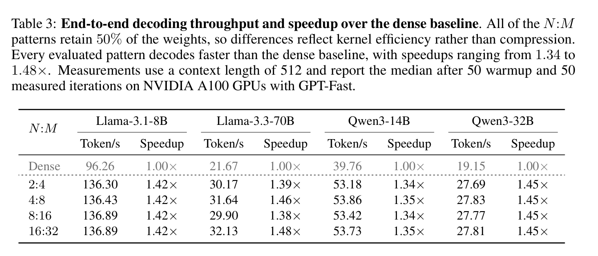

SparseDecoding: Decoding-Aware Pruning for Accurate and Efficient LLM Inference
Preprint
The memory-bound nature of the decoding stage of large language model (LLM) inference incurs significant latency. Layer-wise training-free network pruning approaches guided by the Hessian have been a prominent solution, as pruning reduces the number of nonzero parameters read from memory during decoding. Nevertheless, typical methods compute the Hessian using pre-collected natural sequences, whereas the model is fed self-generated tokens during decoding, creating a distribution shift. We observe that this discrepancy hurts pruned model performance.
Moreover, most existing LLM pruning methods that bring actual speedup primarily target sparse matrix-matrix multiplication (SpMM), providing limited support for sparse matrix-vector (SpMV) operations, which dominate decoding.
To address these issues, we introduce SparseDecoding, a principled decoding-aware pruning framework. At the algorithmic axis, SparseDecoding constructs calibration matrices from layer-wise activations collected during dense-model autoregressive generation, excluding prefill. At the system axis, we develop an optimized N:M SpMV kernel with bitmask indexing and fixed-step traversal. Experiments on Llama-3.1-8B, Llama-3.3-70B, and Qwen3-14B/32B show consistent gains on long-form generation benchmarks and up to 1.48× end-to-end wall-clock decoding speedup on A100 GPUs.





@article{wang2026sparsedecoding,
title={SparseDecoding: Decoding-Aware Pruning for Accurate and Efficient LLM Inference},
author={Wang, Qitong and Niu, Xinwei and Su, Mingluo and Zhao, Shanwei and Zhu, Shiai and Wang, Huan},
year={2026}
}